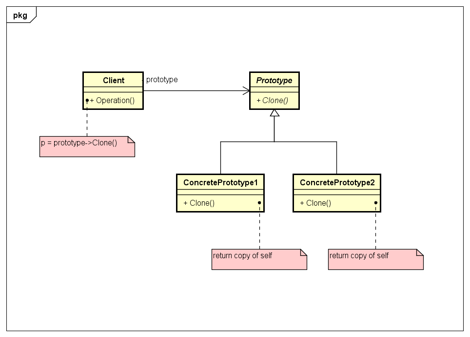

4 - Prototype
Descrição do padrão:
Especifica os tipos de objetos a serem criados usando uma instância prototípica e cria novos objetos copiando esse protótipo.
UML do padrão:

Descrição do exemplo do livro: